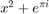
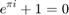

clc; close all; clear all; Fs = 100; % Sampling frequency t = 0:1/Fs:1; % Time vector of 1 second x = 10*cos(10*t) + 20*cos(20*t); % Define signal nfft = 8192; % Length of FFT % SINGLE SIDED f1 = (0:nfft/2-1)*Fs/nfft; % Define frequency vector X1 = fft(x,nfft); % Take FFT of length nfft X1 = X1(1:nfft/2);% FFT is symmetric, throw away second half % DOUBLE SIDED % Take fft of length nfft and shift it f2 = (-nfft/2:nfft/2-1)*Fs/nfft; % Define frequency vector X2 = fftshift(fft(x,nfft)); % Take FFT and shift figure(); subplot(311); plot(t,x); grid on; xlabel('Time (sec)'); ylabel('Amplitude'); title('Signal x(t)'); subplot(312); plot(f1,abs(X1)); grid on; xlabel('Frequency (Hz)'); ylabel('Power'); title('Single-Sided Power Spectrum of x(t)'); subplot(313); plot(f2,abs(X2)); grid on; xlabel('Frequency (Hz)'); ylabel('Power'); title('Double-Sided Power Spectrum of x(t)'); figure(); plot(f2,abs(X2)); grid on; xlabel('Frequency (Hz)'); ylabel('Power'); title('Double-Sided Power Spectrum of x(t)');



